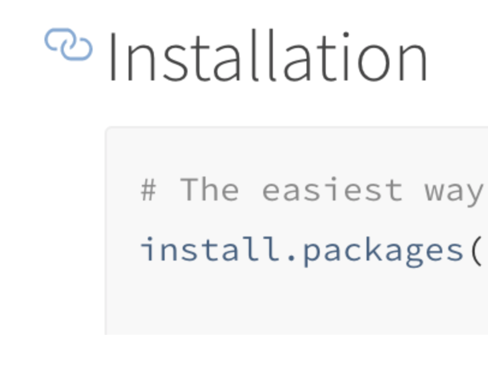
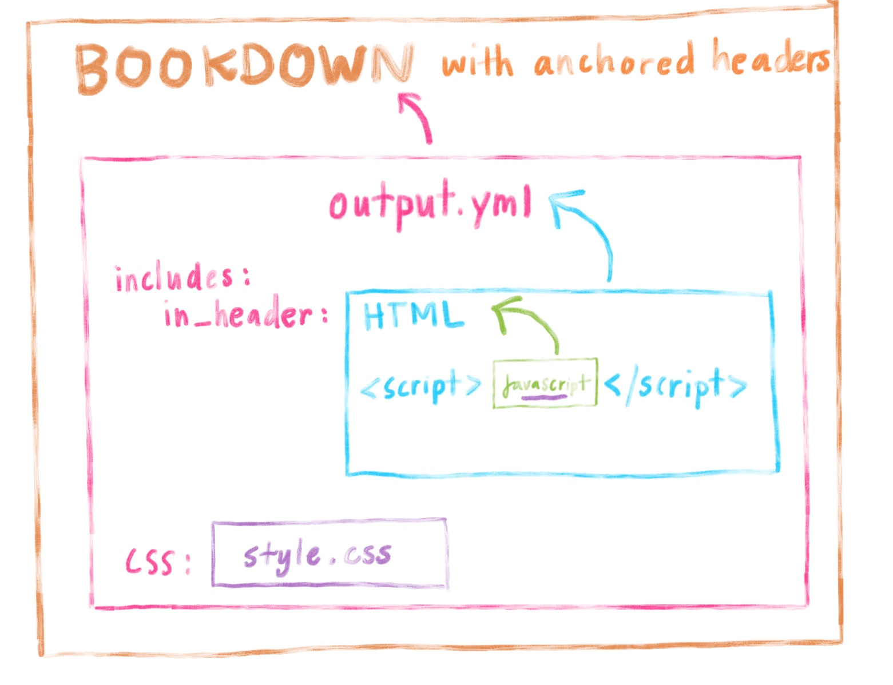

This summer I have been interning at RStudio on a project with Alison Hill, and I’ve been spending a lot of time getting to know bookdown and its friends. In particular, I’ve been thinking about how to make bookdown content more easily shared and accessible.
I’ve noticed that some markdown files within R have built-in ways to get a link to point to specific section headings. These are called anchor links. For example, what you see here:

Having these in a site is useful whenever you want to share a specific section with someone–and you’d like to send them a link that takes them to precisely the section you intend.
But in bookdown, there’s no built-in way to create anchor links with an icon for each section header. The closest you can get is to right-click on the header within the table of contents (TOC) and copy its URL address. But sometimes the subsection you want to link to doesn’t appear in the TOC, and you’re out of luck.
Yihui mentions in his blog how he uses a javascript trick to add this feature in. I thought I would build on this with a short tutorial to walk you through how to do this in bookdown.
If you want to make linking to sections a little easier for yourself and for your bookdown site users, then follow the steps below to create your own anchor links for bookdown section headers.
If you’re not viewing this on a tablet or mobile, here’s what the final product will look like:
Doing this will require:
A wee bit of javascript in a .js file (–“but I know nothing about javascript!” you say?–don’t worry, you don’t need to. Copy/paste is all you need).
An HTML file if you don’t already have one for your book.
CSS
Editing _output.yml
Adding all this in is a little bit like wrapping a present in a box, in a box, in another box… The javascript does the heavy lifting to make the links, but the javascript file has to be put in the HTML file, and the HTML file has to be referenced in the _output.yml file. And bookdown then uses the _output.yml file to implement the javascript code and link to the CSS that styles the anchors.

You can add anchor links to any book that you’ve already started.
I’m going to demo this starting from a skeletal book, using only the files that are created when you have a brand new R Project and have run the line of code below. If you already have a book, then skip to the next step.
bookdown:::bookdown_skeleton(getwd())After running this command, I commit to GitHub.
We’ll make a new file with a few lines of javascript that essentially say “find every section header, and tack on a link to itself right before that header”. The other important thing the javascript file will do is to add a CSS class “hasAnchor” to each of the headers. This is part of what will allow to style our anchor links with CSS in a couple steps.
In RStudio go to File > New File > Text File
Paste the javascript below into this file.
$(document).ready(function() {
// Section anchors
$('.section h1, .section h2, .section h3, .section h4, .section h5').each(function() {
anchor = '#' + $(this).parent().attr('id');
$(this).addClass("hasAnchor").prepend('<a href="' + anchor + '" class="anchor"></a>');
});
});
Save this file as book.js. (You can give it another name, but the convention is usually to name the Javascript file after the project you’re using it for.) Save this file in your working directory.
Phew–you’re done with the javascript code now!
Commit this new file to GitHub.
book.js into HTML fileWe’ll make an HTML file that will refer to our javascript file.
File > New File > Text File
Paste the line below into this file. Modify the path in quotes to point to your javascript file if yours is not in your working directory. (Note: This little line of code will be automatically injected within our bookdown’s existing <html> and <head> tags, when we later use includes: in_header:, so there’s no need to include these tags in this HTML file, but nothing bad will happen if you do).
<script src="book.js"></script>Save this file as header.html in your project directory. You can choose a different name if you’d like.
Commit your HTML file to GitHub.
In our javascript code, we had the class “hasAnchor” be programatically added to our sections headers. So, we can now style them so that each time we hover over the section header, the anchor link icon will become visible.
You may already have a CSS file in your project directory (e.g. style.css), in which case, go to step 2. But if you don’t, create a CSS file with File > New File > Text File. Save it as style.css in your project directory. Once again, a different name is okay.
Open your style.css file. Paste the CSS styles below to this file.
Save and close.
/* -----------Section anchors -------------*/
.book .book-body .page-wrapper .page-inner section.normal {
overflow: visible !important; /*so anchor link doesnt get cut off */
}
a.anchor {
margin-left: -30px;
padding-right: 3px;
display:inline-block;
width: 30px;
height: 30px;
background-image: url(https://image.flaticon.com/icons/svg/34/34735.svg) !important;
background-repeat: no-repeat !important;
background-size: 20px 20px !important;
background-position: center bottom !important;
opacity: 0;
}
.hasAnchor:hover a.anchor, a.anchor:hover {
opacity: 0.6;
}
@media (max-width: 1144px) { /* dont show anchor link on small screens */
.hasAnchor:hover a.anchor {
visibility: hidden;
}
}
If you want a few more details about what’s going on here, here’s a crude summary:
The selector a.anchor styles the anchor link itself. It is always there, but we make it invisible by giving it an opacity of 0. Since it’s always there, positioned just before the headers, we need to give the anchor link a negative margin, so it can exist just outside the typical margins of our book’s container for body text.
Bookdown by default tries to prevent overflow of anything outside of the book’s container for body text, which is why we have to override this with by adding overflow: visible in the first style rule.
In the third style rule, we can make the anchor visible by giving it a non-zero opacity whenever we hover.
Finally, since we made overflow possible, we don’t want the anchor to overlap with the TOC in an ugly mess on smaller screens. So we change visibility to hidden with our CSS media query for screens that are less than 1144px in the last style rule.
Here’s my commit after modifying my CSS file.
_output.ymlWe created all the anchor link infrastructure, now we just need to tell bookdown about it by referencing in our _output.yml.
_output.yml, located in your project directoryReference your HTML file with the includes: in_header: option underneath bookdown::gitbook. Make sure CSS file is also referenced. This part of your _output.yml should look something like this:
bookdown::gitbook:
includes:
in_header: header.html
css: style.cssSave and Close.
My commit here.
When you’re developing your bookdown site, you can control what the section link url will be when you add, for example, {#mysection} to the end of your headers.1
The hashtag you choose here is what will get included in you anchor-linked url. So, it’s a good idea to choose shorter, simpler {#section} names than {#really-super-long-section-names-that-make-long-urls} to make sure your url don’t become unwieldy when it’s time to share.
Now you know everything you need to get started making anchor links for your bookdown books. If this post was useful to you, then give it a shout out on twitter. Have fun sharing links of your bookdown sections!!
Read more about section header IDs in the bookdown book↩